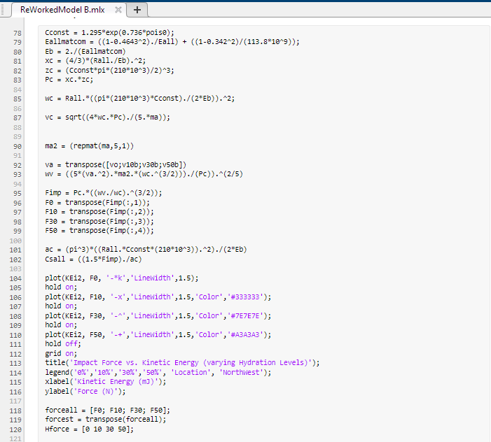

Polishing Model
A MATLAB model designed to characterize the response of a compound abrasive when contacting a workpiece (low and high velocity impacts). This was done with a focus on how hydration of abrasive affects contact parameters.

Extracted MATLAB Code
Final Revision
Using a spring-dashpot model (based on mechanical vibrations), I was able to split the behaviour of abrasive into that of a damper and a spring and thus acquire highly desirable values such as damping ratio and relative contact stress over a range of velocities and abrasive hydration levels.
What I did
- Vibrational Analysis
- Vector Mathematics
- MATLAB Modelling
- Empirical and Analytical Modelling
- Model Verification
- Journal Paper Development